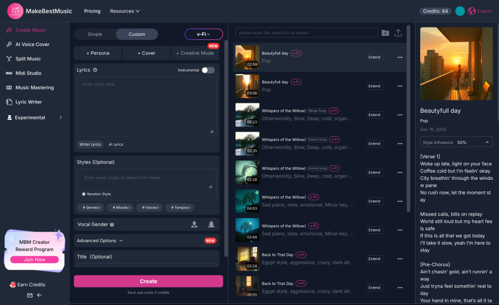
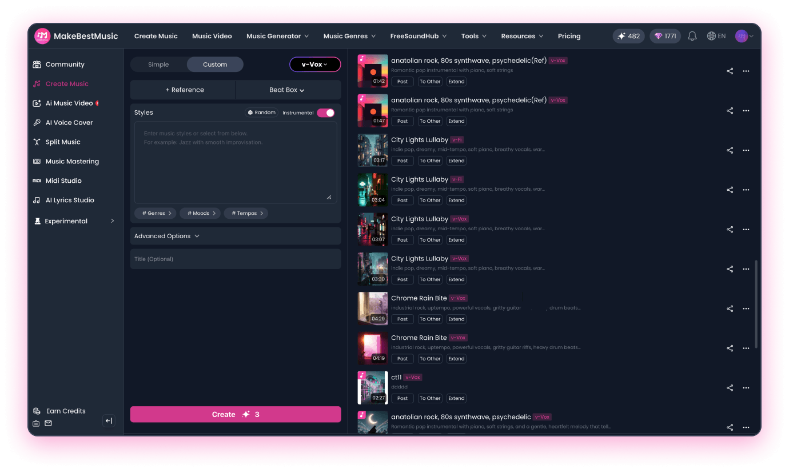

做播客的第三周，我终于把片头片尾的版权问题解决了
一个独立播客主播从到处找免费音效到用 AI 生成全套配乐的真实经历——片头、片尾、转场、背景乐，一次搞定。
被版权追着跑的第三周
我做播客纯属业余爱好，每周一期，聊的是独立游戏开发圈那些有意思的人和事。前两期的片头片尾我是从几个"免费音效"网站扒的——老实说质量还行，就是每次下载都要仔细看授权条款，生怕哪天被版权方找上门。
第三期上线前，我又打开了熟悉的那个免费音乐站点，发现之前用的那首片头的作者把授权改成了非商业用途。我这个播客虽然一分钱没赚，但爱发电页面挂在那儿呢，严格来说算有商业属性。得换。
换了三天没找到合适的。要么风格不搭，要么授权模糊，要么一听就是烂大街的素材库货色。我坐在 Audacity 前盯着那根空白的音频轨道，突然觉得做个播客怎么这么累。
朋友甩了一个链接过来
朋友圈吐槽了一句，一个做独立游戏配乐的朋友私信甩了我一个链接："试试Make Best Music官网，AI 生成音乐，授权干净。"
我点开一看，界面挺干净的。从下载进去注册，还送了 3 个免费 Credits，我先瞎玩了一会儿——输了个"20 秒轻松电子风格开场，适合科技脱口秀"，等了大概一分钟，出来一段还真像那么回事的旋律。
不是那种"AI 生成的电子味特别重"的糟糕成品，音色和节奏都挺顺。我又生成了两个不同方向的，挑了个最喜欢的片头版本。

一个下午搞定全套配乐
之前我以为片头曲是最头疼的，没想到后面的更省事。
片尾曲我直接把片头的 prompt 改了几个词——"同样风格，15 秒结尾，带一点渐弱收束"——出来的东西和片头是一个调性的，听众听到就知道"这期快结束了"。
转场音效是个小意外。我本来想直接找 2~3 秒的现成音效，结果 Make Best Music 不擅长做那么短的片段。朋友教了我一招：先生成一段 15 秒的同风格音乐，用 Stem Splitter 拆成各乐器轨，然后在 DAW 里截取一个短促的钢琴单音或者合成器"叮"的一声，加个 Reverb 就成了。
我试了一下，Advanced 模式拆出 12 轨还带 MIDI。从钢琴轨里截了一个 3 秒的余音，加了点混响，调了下音高上扬——听着就像"下一段来了"的提示音。关键是这个转场音效和片头片尾是同一套乐器音色，整个节目听起来就是一个统一的声音品牌。后来去Make Best Music文档翻了一下，才发现这个拆轨技巧也是社区里常用的做法。
持续背景乐更简单。先生成了一段 5 分钟的 Lo-fi 钢琴，用 Extend 拉到 40 分钟覆盖整集，Audacity 里做了个交叉淡入淡出无缝循环，最后音量拉到 -28dB——非常安静，不仔细听听不到，但节目不再显得空洞。
母带处理那一下，真的不一样
全部轨道混完之后，我注意到平台上还有个 AI Mastering 功能。反正 Credits 还剩几个，就试了一下。
一键跑了一遍，AI 自动把响度拉到了 -14 LUFS（Spotify 和 Apple Music 的标准），修了一下低频浑浊的地方，还加了点立体声增强。对比了一下原版和母带版——原版在手机上听着有点闷，母带版明显通透了不少。
这个细节让我挺意外的。我以为 AI 生成音乐就是"生成出来能听就行"，没想到整个后处理工具链是完整的：Stem Splitter 拆轨、AI Remix 微调、AI Mastering 出成品。一个下午，从片头到母带，全在这一个平台里搞定了。

这期播客上线之后
第三期播客上线那天，我把简介里加了一句："背景音乐由 Make Best Music 生成。"
没想到收到几条听众留言，说这期的配乐"感觉比之前舒服多了"。还有一个同样做播客的听众私信问我用的什么工具。
我没说我花了一下午搞定——听起来太业余了。我就说找了个 AI 音乐工具试试，效果意外地好。
回头想这件事，让我觉得最爽的不是省了多少钱（免费档 3 个 Credits 就够我试一轮了，Basic 档也才十几美元一个月），而是整个配乐流程再也不是到处找素材、拼拼接接、担心版权的碎片化体验了。统一的风格、干净的授权、完整的工具链——以前这些要么要花钱雇人做，要么自己学半年 DAW。
如果你也是做内容的——播客、视频、独立游戏——被音乐版权或者素材质量烦过，真的可以试试。整套试用下来不满意再退也没损失。对了，那个付费档还包含商业授权，爱发电付费内容也能用，不用再一条条去看条款了。
这套资料我同步放在了三个代码仓库里，方便你翻更详细的功能说明和操作步骤——GitHub 主仓库、国内访问更快的Gitee 镜像，还有GitCode 的备份版本，每个仓库都按分类整理好了对应的文档目录。